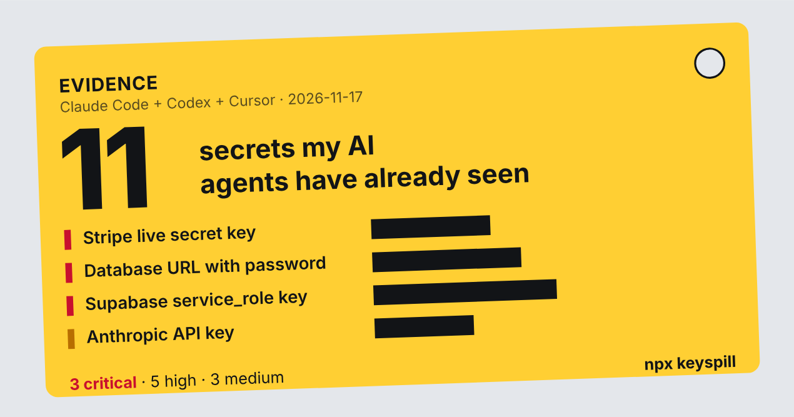
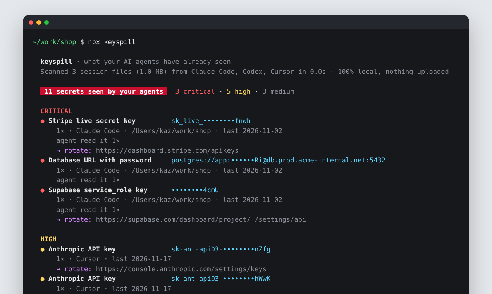
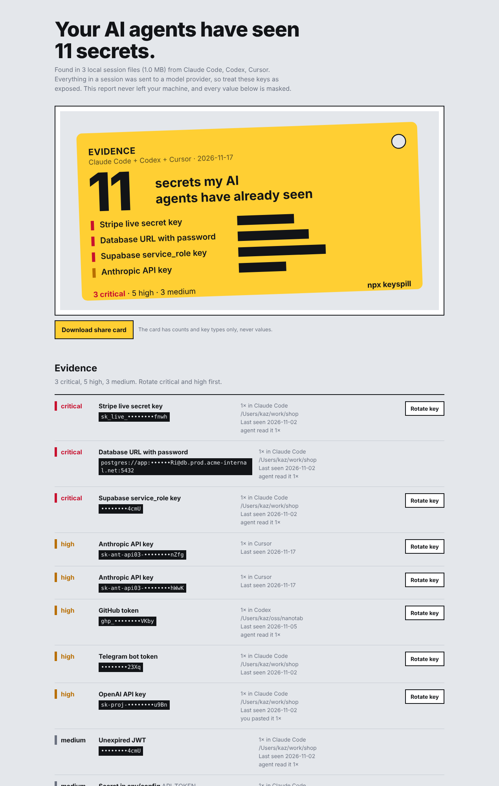

Open-source CLI · MIT
Your AI agents have already seen your keys.
keyspill reads the session history Claude Code, Codex, Cursor and friends keep on your disk, and tells you exactly which secrets to rotate.
npx keyspill
- 100% local
- Zero dependencies
- Never prints a full key
- Node 18+


Why this exists
Coding agents read files. Your .env is a file.
Once a key lands in a session, it was sent to the model provider and now sits in plain text in ~/.claude, ~/.codex or Cursor's database, often synced to backups. keyspill shows how each one got there.
The agent opened a file
It ran cat .env, read ~/.aws/credentials or a config to debug something. The whole file went into the context.
You pasted it in chat
"Here's my key, why does it 401?" Fast, convenient, and now in the log for good.
The agent typed it into a command
A connection string inlined into a migration script or a curl call the agent composed for you.
One command
A report you can act on in a minute.
Every finding comes with severity, which agent and project, when it was last seen, how it got there, and a direct link to rotate it.

Coverage
Seven agents, on macOS, Linux and Windows.
keyspill knows where each one keeps its history and reads it without touching it.
- Claude Code~/.claude/projects
- Codex~/.codex/sessions
- Cursorstate.vscdb, ~/.cursor/chats
- GitHub Copilot CLI~/.copilot/session-state
- Gemini CLI~/.gemini/tmp
- opencode~/.local/share/opencode
- Cline / Roo / KiloVS Code, Cursor, Windsurf globalStorage
What it finds
30 high-signal rules. Low noise on purpose.
A false alarm in a security tool costs more trust than a miss, so the rules are conservative.
- AWS keys
- Stripe live keys
- Private keys (PEM)
- Database URLs with passwords
- Supabase service_role
- OpenAI
- Anthropic
- GitHub
- GitLab
- Google API
- Slack
- Telegram
- Discord
- SendGrid
- Twilio
- npm
- PyPI
- Hugging Face
- Groq
- Replicate
- DigitalOcean
- Shopify
- Unexpired JWTs
- SECRET= / PASSWORD= in env files
Ignored by design: documentation example keys, placeholders like USER:PASSWORD@HOST, Supabase anon keys (public), expired JWTs, local postgres:postgres@localhost, and code like API_KEY = process.env.API_KEY.
Privacy
A secrets scanner that never phones home.
You're pointing it at the most sensitive files on your machine. It should be boring and readable.
- Runs entirely on your machineNo network requests. The HTML report loads no fonts, scripts or analytics.
- Never shows a full secretOutput is masked (
sk_live_••••••••fnwh) with a short SHA-256 fingerprint. - Read-onlyYour session files are never modified, copied or uploaded.
- Small enough to auditZero dependencies, about 850 lines of plain JavaScript. Read the source.
Stop it happening again
Keep .env out of future sessions.
Adds permissions.deny rules to Claude Code so it can't read .env*, *.pem, *.key, secrets/, ~/.aws or ~/.ssh, and a .cursorignore to your project. Your settings are backed up first.
# preview the changes npx keyspill protect # write them npx keyspill protect --apply
Deny rules cover file reads, not shell commands like cat .env. Keep reading what you approve.
Share card
Show the count, never the keys.
npx keyspill --card writes a local HTML report with every finding masked, plus a card you can download as a PNG. The card has counts and key types only.
npx keyspill --card

FAQ
Questions people ask first.
Does anything leave my machine?
No. keyspill makes no network requests. It reads local files, prints a masked report and, if you ask, writes an HTML file next to you. That's it.
It found a key. What now?
Rotate it. Each critical and high finding links to the provider's key page. Rotation is the fix: deleting the session log doesn't un-send what the provider already received.
Can I run it in CI or a script?
Yes. --json gives machine-readable output with masked values only, and the exit code is 1 when any critical or high secret is found. Use --path <dir> to scan other folders.
It flagged something that isn't a secret.
Please open an issue with the masked line from the output (never the real value). False positives get fixed fast.
My agent isn't supported.
Open an issue saying where it keeps its history, or send a PR adding a source in src/sources.js.